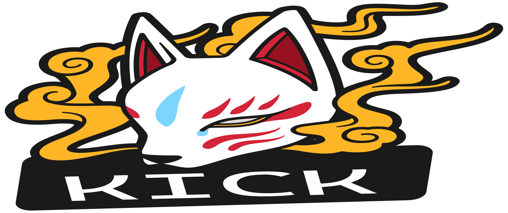
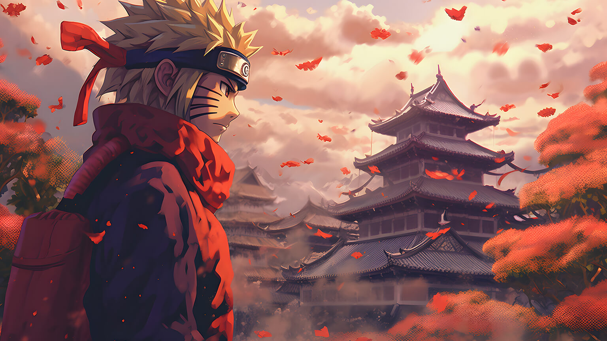
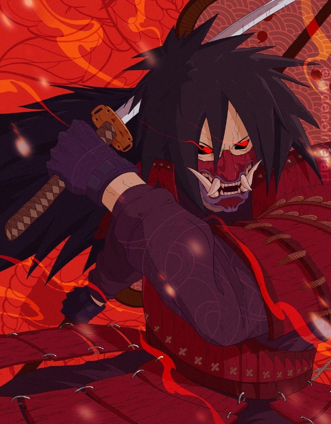

Seu "Wikipédia" de anime |
|
|  | |
|
Naruto (ナルト?) é uma série de mangá escrita e ilustrada por Masashi Kishimoto, que conta a história de Naruto Uzumaki, um jovem ninja que constantemente procura por reconhecimento e sonha em se tornar Hokage, o ninja líder de sua vila. A história é dividida em duas partes, a primeira parte se passa nos anos da pré-adolescência de Naruto, e a segunda parte se passa em sua adolescência. A série é baseada em dois mangás one-shots de Kishimoto: Karakuri (1995), e que por causa dele Kishimoto ganhou uma menção honrosa no prêmio Hop Step da Shueisha no ano seguinte, e Naruto (1997). A editora Panini Comics licenciou e publicou o mangá em três versões no Brasil, e em Portugal é a editora Devir Manga quem licencia e publica o mangá. A história de Naruto continua com o seu filho, Boruto Uzumaki em Boruto: Naruto Next Generations. Os capítulos de Naruto foram publicados na revista Weekly Shōnen Jump de 1999 a 2014, com estes capítulos compilados e publicados em 72 volumes tankōbon pela editora Shueisha. O mangá foi adaptado para uma série de anime produzida pelo Studio Pierrot e Aniplex, que teve os seus 220 episódios transmitidos pela TV Tokyo no Japão de 2002 a 2007; a adaptação brasileira da série foi exibida na Cartoon Network e no SBT, e atualmente é exibido nos serviços de streaming Crunchyroll, Netflix e Claro Vídeo. Já a adaptação portuguesa da série foi exibida na SIC Radical, SIC, SIC K e no Animax Portugal. Naruto Shippuden, a sequência da série original, estreou no Japão em 2007 e terminou em 2017, após 500 episódios. A adaptação brasileira foi exibida na PlayTV de 2015 a 2017, na Loading entre 2020 e 2021, e atualmente é exibida nos serviços de streaming Crunchyroll, Netflix e Claro Vídeo. Além da série de anime, o Studio Pierrot desenvolveu onze filmes e vários OVAs. No Brasil, alguns filmes foram licenciados e exibidos dublados no país pela Viz Media. Outros produtos relacionados a Naruto como light novels, jogos eletrônicos, e cartas colecionáveis foram desenvolvidos por várias empresas. |
 |
|
SINOPSE A história principal se foca em Naruto e seu desenvolvimento quanto ninja, junto com os seus amigos. Também se centra nas interações entre estes e a influência do ambiente em suas personalidades. Conforme transcorre a série, Naruto se relaciona com Sasuke Uchiha e Sakura Haruno, com quem forma o “Time 7”, juntamente com o sensei Kakashi Hatake.[3] Cabe mencionar que Naruto confia muito neles assim como em outros personagens que irá conhecendo mais adiante. |
|
| Desenvolvido por Guilherme O. Leite | |